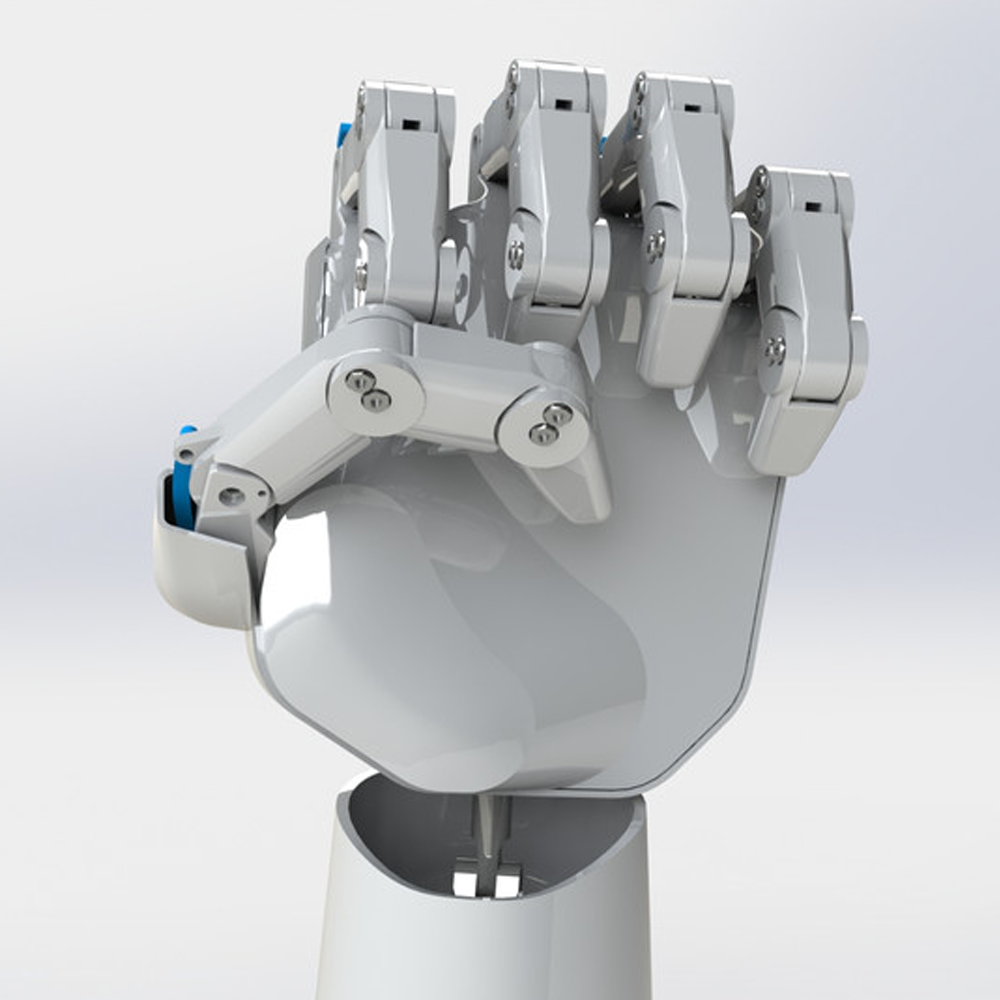

¿De que trata?

Este proyecto lo llevé a cabo en pandemia, la idea nació en colaboración con Erick Fernández un chico de mi edad con el cual asistía a robótica ya que le comenté que se podía hacer una mano robótica con pocos materiales como popotes, servomotores y un arduino, tan pronto como le dije esto llevamos a cabo un primer prototipo de una mano accionada por comandos en programación usando los materiales que le sugerí, posteriormente Erick por su cuenta desarrolló una segunda versión de esta mano que sería impresa en 3D, se seguiría moviendo con los mismos servomotores, pero su verdadera innovación sería su forma de ser controlada ya que usando un guante con sensores de resistencia variable en cada dedo podríamos replicar los movimientos de una mano real en la mano robótica.
Cuando se terminó este segundo prototipo fue que llegó la pandemia y no pudimos continuar con el desarrollo, por ello yo en mi casa decidí continuarlo como una forma de mejorar mis conocimientos. Comencé rediseñando la mano para acomodar de mejor manera los componentes, posteriormente imprimí todas las piezas en 3D y le di vida con servomotores de mejor calidad y un arduino como cerebro además de agregarle una conexión bluetooth para entablar una comunicación con mi computadora y poder hacer procesamientos más complejos, con esta nueva capacidad de cómputo desarrollé un programa en el que podías escribir cualquier palabra y la mano la traduciría a lenguaje de señas letra por letra, a su vez implementé un reconocimiento de voz con el cual podías decir cualquier palabra y la mano la traduciría por ti.
La idea final de este proyecto era continuar el desarrollo para crear un exoesqueleto completo y poder traducir a lenguaje de señas de una forma más natural y que se pudiera aplicar en aulas de clase para facilitar el aprendizaje de personas zordas, si bien aun no he concluido este proyecto, está en mi lista de pendientes tan pronto tenga el presupuesto para llevarlo a cabo.
Durante el desarrollo de los primeros prototipos varios periódicos locales nos hiceron reportajes que se pueden encontrar en los siguientes enlaces.